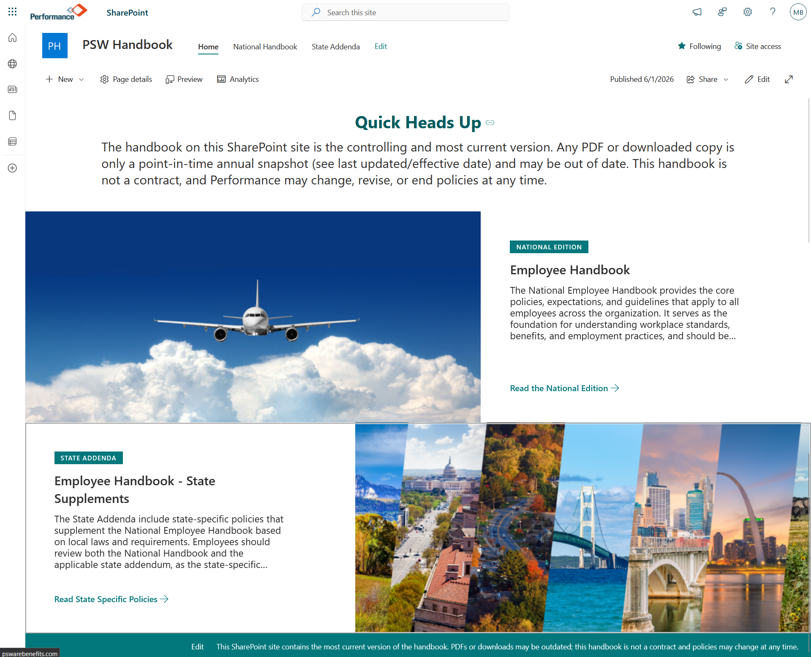
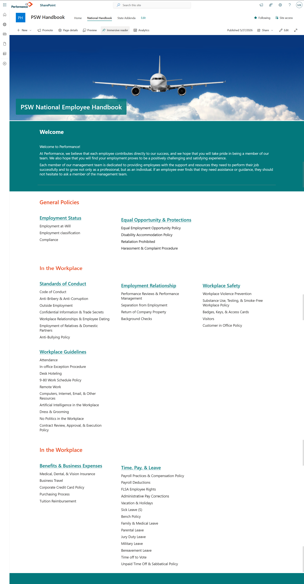
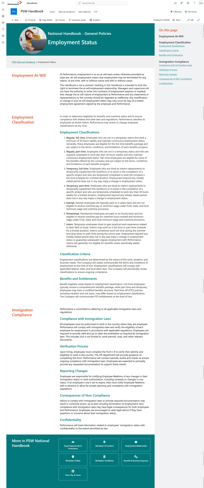
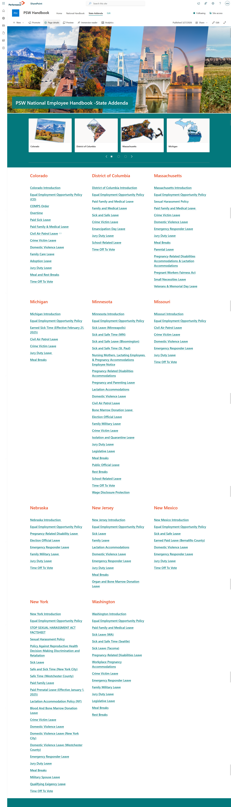
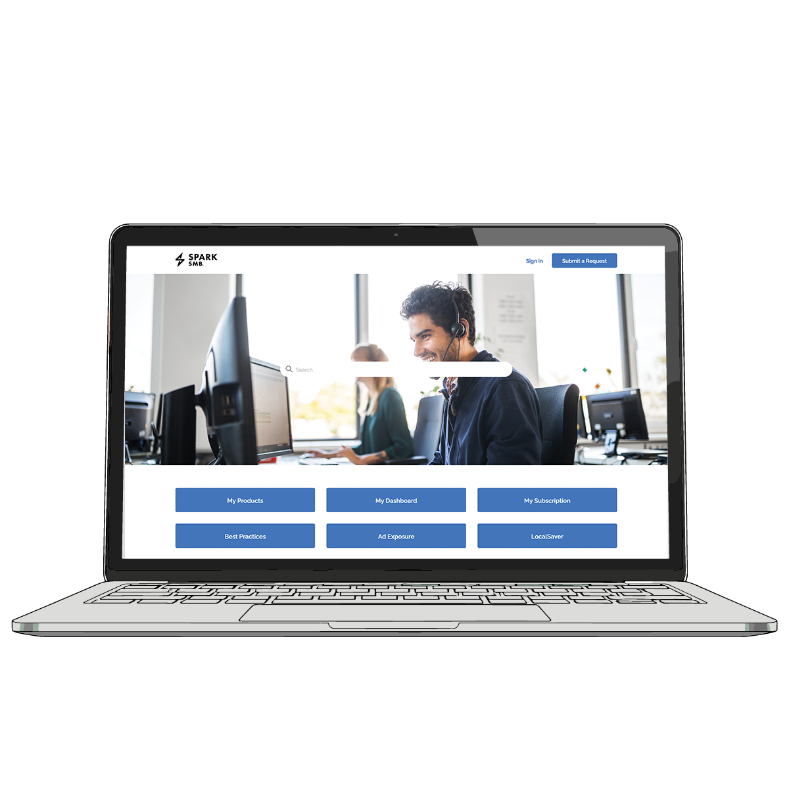

Sites
Employee Handbook: Dynamic Sharepoint Site Creation
This project started as a request to have a more modern and easily editable version of the Employee Handbook.
I decided on using a Sharepoint site because it was already easy to access by everyone in the company and wouldn't exist as an extra outside login that could be easily forgotten. Sharepoint also had a variety of asked for features already included, such as a search function, permissions feature, and easy to use editor.
The site consists of two main parts: the Employee Handbook and State Addenda.






Success Center: Full Zendesk Help Site Creation
This project aimed to clean up an old version of the Success Center based on research done on customer activity on the site and conversations about pain points from Customer Success.
The old site had outdated information, no quick and easy way to contact a support person, and it had a fixed layout that wouldn't adjust to adding/removing help articles as needed. I also discovered that more than once a customer had typed out a full help request into the search bar complete with their contact info thinking it was a help form.
The new one I designed with feedback from the customer success team and from my team was set up to have a more modern and scalable layout. The hope for it was we would set up the initial new layout with new articles and circle back after about a year to see how the progress was going and search for any new pain points. Unfortunately, the product it was supporting got shut down within the year so there was never a chance to go back as a team and do a full review.The site was set up using Zendesk's customer success center editor, which uses basic html and css as well as a templating language called CurlyBars.